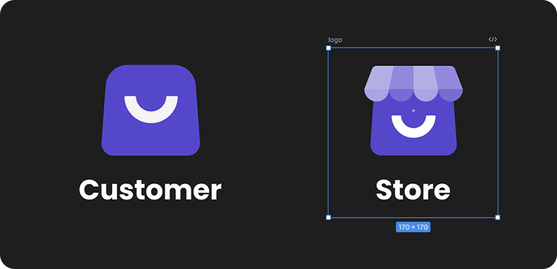

Regular consumers
Looking to save money, especially students, families, and budget-conscious shoppers.
Feb 2023 - Ongoing
Role
UX/UI, Brand, Research
Platform
Flutter (iOS, Android), Web
Foody Bag is a mobile app that connects consumers with local food businesses offering surplus meals at a discount. The platform helps reduce food waste while allowing users to enjoy high-quality food at lower prices. As a designer, my goal was to modernize the app's interface, enhance usability, and build features that drive user engagement and operational efficiency.
As the product designer, I was responsible for elevating the app’s UI and UX, ensuring a consistent visual identity, and introducing new features to better serve both users and store owners. My core contributions included:
The goal of Foody Bag was to improve the experience of buying and selling surplus food through a simple, user-friendly mobile app. For businesses, the app offers an efficient way to minimize food waste and recover costs. For consumers, it provides affordable access to quality meals. By bridging this gap, the platform supports both sustainability and smart consumption.
Planet-loving food retailers are super concerned with the food waste they produce, so we help them sell it, which means you can buy it usually for a third of the price or half of its price.
Before the redesign, Foody Bag struggled with several usability and design issues that limited its effectiveness:
Outdated design system
Inconsistent design system, leading to visual inconsistencies across the app.
Confusing order flow
Confusing Order Details flow, making it difficult for users to track and manage their purchases.
Engagement gap
Missing an opportunity to engage and motivate users through gamification.
No analytics tool
No advanced analytics tools for store owners, preventing them from managing surplus inventory.
Regular consumers
Looking to save money, especially students, families, and budget-conscious shoppers.
Individuals
Environmentally conscious individuals who want to contribute to a sustainable future.
Small-sized business
Small and medium-sized business owners who need an efficient way to manage and sell surplus food.
Food enthusiasts
Bargain hunters interested in discovering quality meals at reduced prices.
Organizations
Socially responsible organizations that support sustainability initiatives and seek to minimize food waste.
Australian market
The app is designed for the Australian market, with potential for future expansion
The redesign process was informed by continuous user feedback and hands-on collaboration with stakeholders. We also conducted a competitive analysis of similar apps to identify industry standards, uncover gaps, and define opportunities for Foody Bag to stand out. This combination of insights helped ensure a user-centered approach aligned with both market trends and user expectations.
I created a unified design system with clearly defined primary and secondary colors, typography, and reusable components. This brought visual consistency across both apps, strengthened brand identity, and improved accessibility. The system also made future updates more efficient and scalable.

Redesigned the Store Owner app logo to improve brand recognition and create a stronger visual identity. The updated logo aligns with modern branding standards, making the app more appealing and recognizable to store owners and customers alike.
I redesigned the entire order flow - from placement to in-store pickup to make the process more intuitive and user-friendly. Key improvements included clearer order tracking, simplified pickup confirmation, and better visibility of important details. These changes reduced user friction and improved the overall experience for customers.
To increase engagement, I designed a new “Impact” tab that gamifies user achievements. It lets users track how much money they’ve saved, how many friends they’ve invited, and their contribution to reducing food waste.
The tab features custom illustrations and progress indicators to celebrate milestones. These visual rewards create a sense of progress and motivation, encouraging users to return and stay active in the app.
I designed an analytics dashboard to help store owners better understand their business performance. It provides real-time insights into sales, revenue, forecasts, product popularity, and underperforming items.
With this feature, store owners can make smarter, data-driven decisions, optimize inventory, and minimize food waste more effectively.
We improved stock management by letting store owners plan their inventory for the upcoming week. This helps them get ready for changes in demand.
We also added a quick way to adjust the stock for the current day, making it faster and easier to update inventory on the go.

Planning
Store owners can now plan inventory for the week, ensuring better preparation for demand.
Quick adjustment
Store owners can now quickly adjust daily stock levels with an easier, more intuitive design.
This project helped me grow both as a designer and a collaborator in an international team. I improved my skills in building and maintaining a design system while enhancing communication with stakeholders across different countries. Analyzing and redesigning an existing app with significant UX/UI issues was challenging but rewarding, pushing me to adopt a more analytical and business-focused mindset. If I were to start over, I would implement a design system from the beginning to ensure consistency and efficiency. Overall, this experience deepened my understanding of balancing user needs with business goals and strengthened my holistic approach to design.